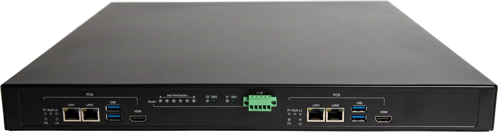
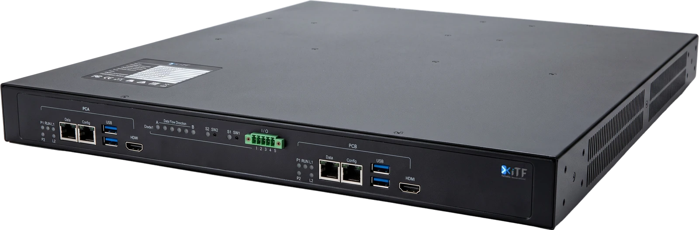

Products
Five FPGA-based gateways
Five FPGA-based gateways
Data out, nothing back in
Four one-way models and one controlled two-way gateway. Sized for the cabinet, the rack or the product it goes inside.
 TFG-121Unidirectional
TFG-121Unidirectional TFG-1URPUnidirectional
TFG-1URPUnidirectional
TFG121-BFUnidirectional TFG121-BSGControlled bidirectional
TFG121-BSGControlled bidirectional
TFG-VSecureCCTV gatewayGateways
Four one-way models and one controlled two-way gateway
UnidirectionalTFG-121
Fan-less DIN-rail gateway. Rugged security at the point where data is generated.
- Throughput
- 1-10 Gbps
- Form factor
- DIN-rail, fan-less
- Data flow
- One-way, protocol-level
UnidirectionalTFG-1URP
1U rack-mount gateway and scalable core infrastructure for the plant and site boundary.
- Throughput
- 1-10 Gbps
- Form factor
- 1U rack mount
- Data flow
- One-way, protocol-level
TFG121-BF
Files up to 10 GB. The TFG121-BF handles larger files, up to its SSD capacity.
- Throughput
- 1-10 Gbps
- Form factor
- 1U rack mount
- Data flow
- One-way, protocol-level
Controlled bidirectionalTFG121-BSG
A controlled two-way gateway, not a diode. Sessions start only from the side you choose.
- Throughput
- 1-10 Gbps
- Form factor
- 1U rack
- Data flow
- Controlled two-way, port-level
CCTV gateway
TFG-VSecure
Isolates IP cameras and lifts video out of the protected segment, so a compromised camera cannot reach the network behind it.
- Throughput
- 1-10 Gbps
- Form factor
- 1U rack or cabinet
- Data flow
- One-way, protocol-level
Watch how Terafence works
Tell us where your boundary sits
Say what has to cross it. We will help you choose the right device and plan a pilot.